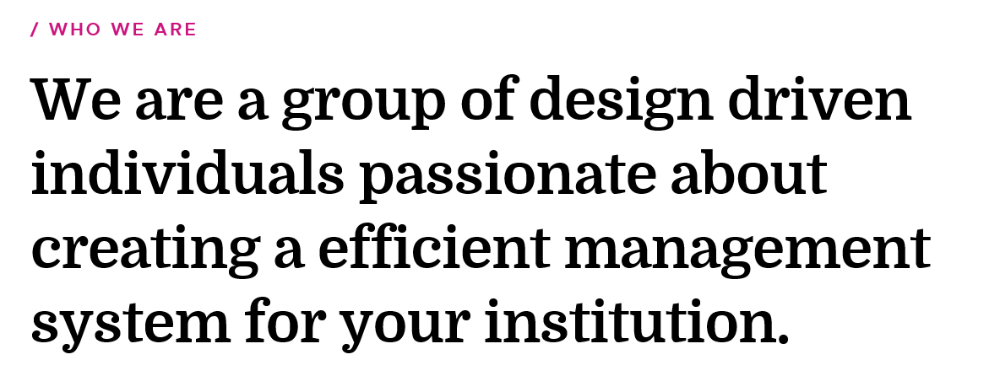

About |
The essential feature of the office is the work itself, not who does it or where it is done.If it is office or clerical work in one place, it is office or clerical work everywhere regardless of where the work is done or who does it. Office is a unit where relevant records for the purpose of control, planning and efficient management of the organization are prepared, handled and preserved. Office provides facilities for internal and external communication and co-ordinates activities of different departments of the organization.
